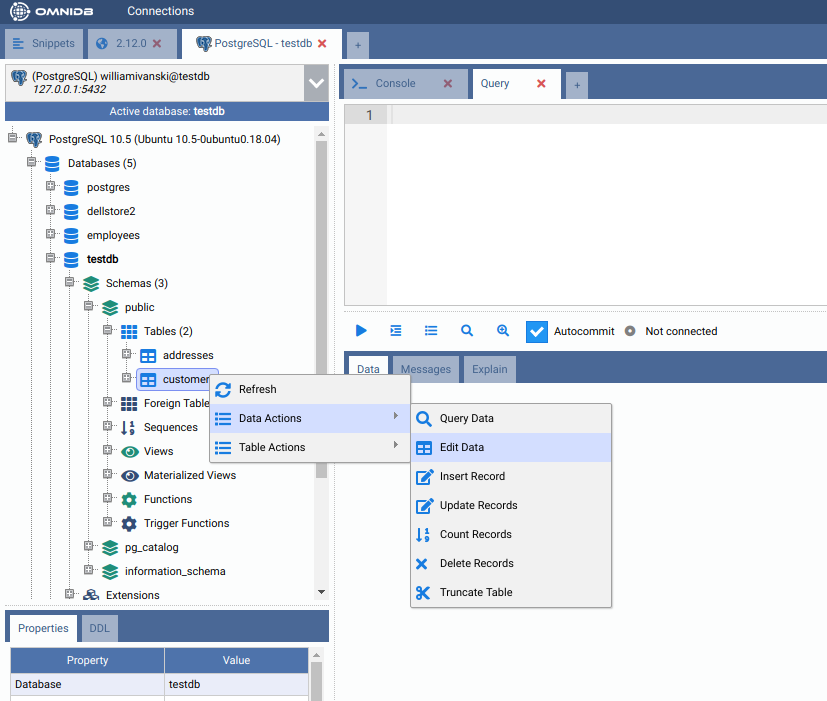
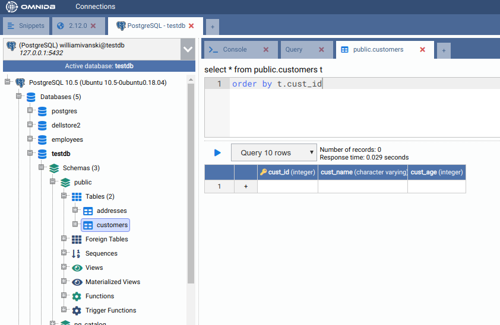
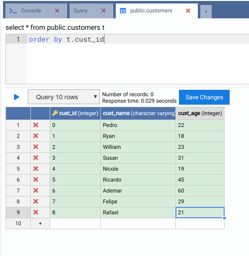
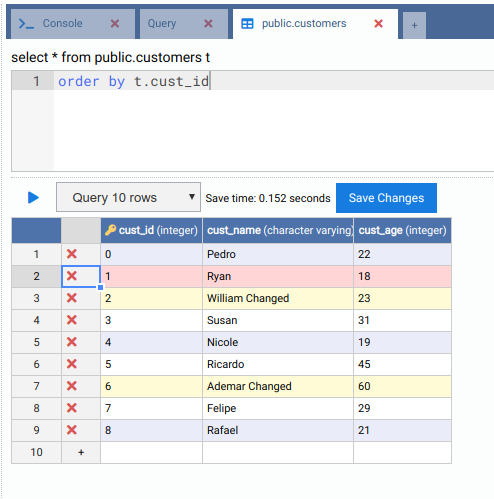
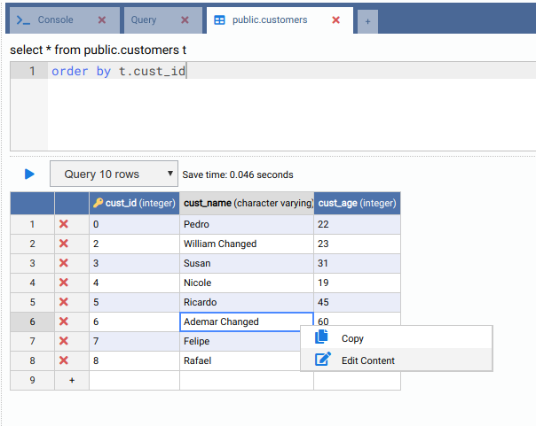
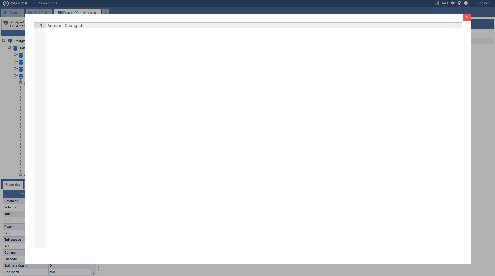
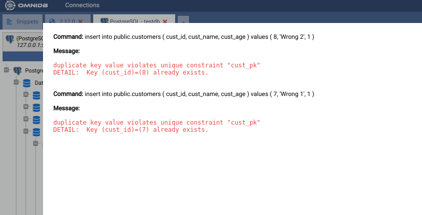
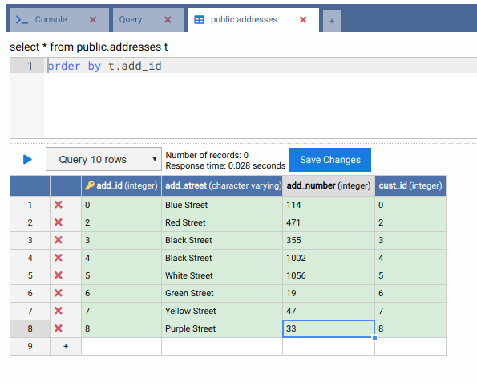

Gérer les données des tables
L’outil permet de modifier les enregistrements contenus dans les tables au moyen d’une interface très simple et intuitive. Étant donné que peu de SGBD fournissent automatiquement un identifiant unique pour les enregistrements des tables, nous avons choisi de n’autoriser la modification et la suppression de données que pour les tables possédant une clé primaire. Les tables qui n’en ont pas ne peuvent recevoir que de nouveaux enregistrements.
Pour accéder à l’interface de modification des enregistrements, effectuez un clic droit sur le nœud de la table et sélectionnez l’action Data Actions > ; Edit Data (Actions sur les données > ; Modifier les données) :


L’onglet Modifier les données comporte un petit éditeur SQL destiné à une clause facultative de filtre et de tri,
ajoutée à la requête qui charge les enregistrements — par exemple where t.cust_id > 10 order by
t.cust_name (la table est disponible sous l’alias t) —, une liste déroulante qui limite
le nombre d’enregistrements chargés (Interroger 10 lignes, Interroger 100 lignes ou Interroger 1000
lignes) et un bouton Exécuter qui (re)charge la grille. La grille des enregistrements indique les noms de colonnes
et les types de données. Les colonnes appartenant à la clé primaire affichent une icône de clé à côté de leur nom. Si
la table n’a pas de clé primaire, OmniDB avertit La table n’a pas de clé primaire, les lignes existantes seront en
lecture seule. — vous pouvez néanmoins ajouter de nouvelles lignes.
Les modifications ne sont pas écrites immédiatement : modifiez, ajoutez et marquez les lignes selon vos besoins, puis cliquez sur Enregistrer les modifications, qui apparaît dès qu’il y a quelque chose à enregistrer. La première colonne de chaque ligne contient son action de ligne : un clic sur le × à cet endroit marque la ligne pour suppression (cliquez à nouveau pour annuler), ou retire une nouvelle ligne pas encore enregistrée.
La ligne de la grille portant le symbole + permet d’ajouter de nouveaux
enregistrements. Insérons quelques enregistrements dans la table customers :

Après l’enregistrement, les enregistrements sont insérés et peuvent être modifiés (uniquement parce que cette table possède une clé primaire). Modifions le cust_name de certains enregistrements existants et, dans le même temps, supprimons l’une des lignes :

Les tables peuvent comporter des champs dont les valeurs sont représentées par des chaînes très longues. Pour faciliter la modification de ces champs, faites un clic droit sur la cellule et choisissez Edit Content (Modifier le contenu) : un éditeur plus grand s’ouvre (avec coloration syntaxique pour les colonnes JSON/JSONB et XML), et Enregistrer réécrit la valeur dans la grille. Le même menu propose Copier :


L’interface détecte les erreurs pouvant survenir lors des opérations sur les
enregistrements. Pour le démontrer, insérons deux enregistrements avec un même
cust_id (clé primaire) :

Elle affiche les commandes qui ont été tentées ainsi que les erreurs correspondantes.
Pour terminer ce chapitre, ajoutons quelques enregistrements à la table Address :
